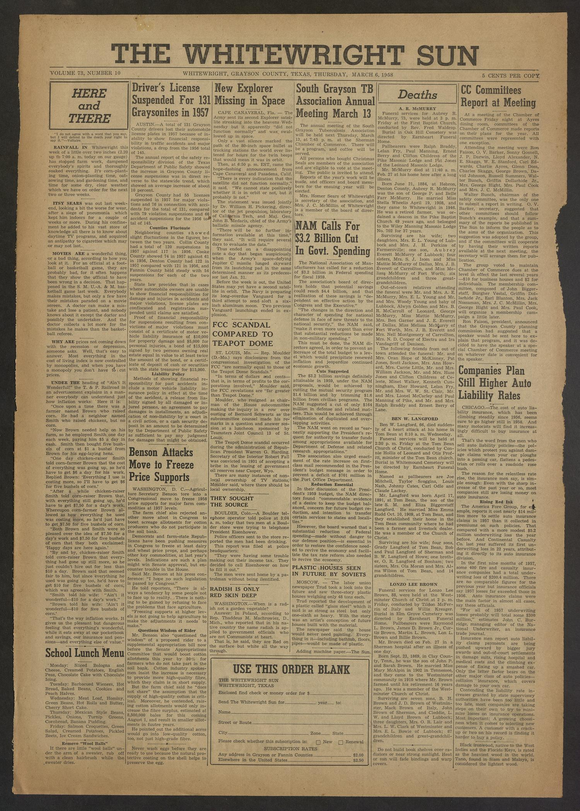
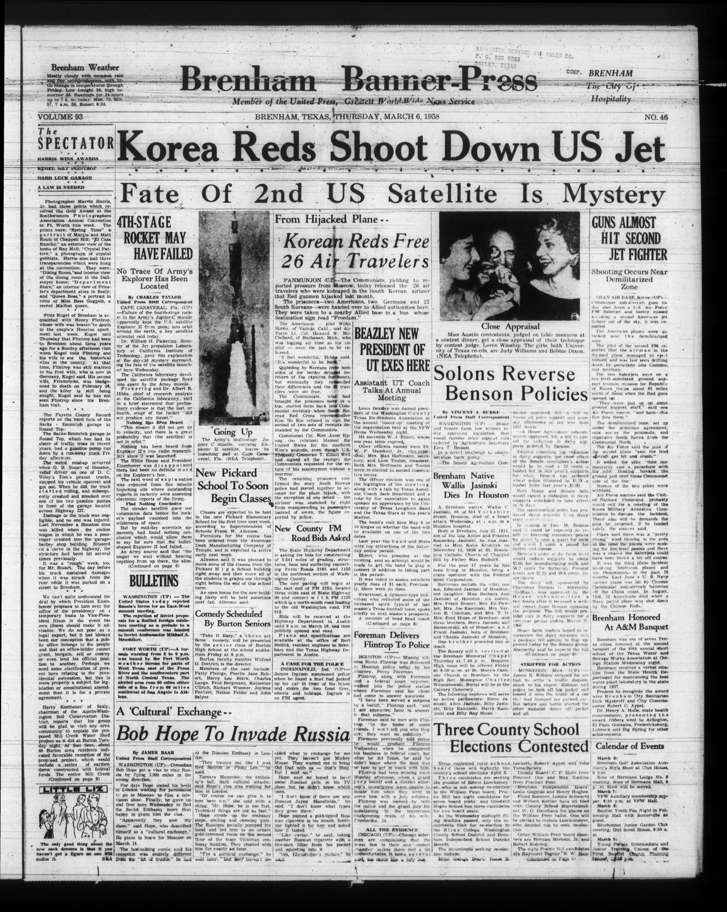
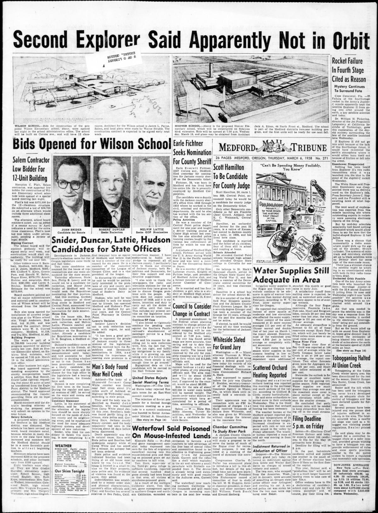

HN HN-621 · March 6, 1958 · Science, Invention & Technology > Astronomy & Space Exploration > Robotic exploration
Source: Decatur Daily Democrat, p. 1 — original page; NASA, Sputnik–Explorer launch chronology.
Report: “No Sound Is Received From Explorer II†described tracking stations listening for a satellite signal with declining hope after a Jupiter-C launch.
Assessment: Explorer 2 did not reach orbit because the final stage failed. The absence of radio contact was an observed fact; on the newspaper date, details of why the attempt failed were still being determined. It should not be listed as a second successful American satellite.
Authentic images retrieved from The Portal to Texas History (University of North Texas) and Historic Oregon Newspapers (University of Oregon). Article crops are located using the archive's own OCR word coordinates and rendered at native crop resolution; article clips are assembled from the archive's own article-block images; page scans are reduced-size access renditions. No images were generated, mocked, or retouched.



Not yet acquired. Queued for provider-specific acquisition testing (see source-acquisition manifest).
URL (preserved verbatim): https://newspapers.library.in.gov/?a=d&d=DCDD19580306.1.1
Saved research report: Historical_Newspaper_Event_Research_603-627_2026-10-23.md
Evidence note: A newspaper report means a historical publication made a claim; it does not establish that claim as fact. Contemporary reporting is separated from later scholarly context and our own assessment.